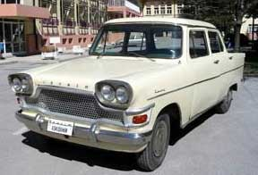
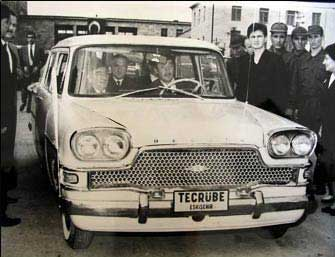
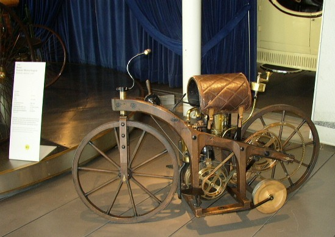
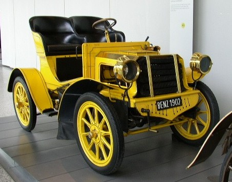
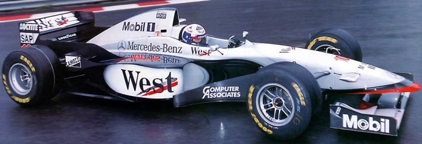

|
28.10.2005
Arkadaþlar merhaba,
Sonlarýna yaklaþmýþ olsak dahi yine de hayýrlý Ramazanlar.
Yerli otomobil üretimi ile ilgili görüþler gayet iyi gidiyor bence. Farklý görüþ, farklý akýllar insanýn en güzel ve üstün þekilde yaratýldýðý ve tasarlandýðýný gösteriyor. Bunun için bu güzel Ramazan sabahýnda yüce yaratýcýya ne kadar þükür etsek azdýr.
Konu ile ilgili bazý akýllar göðüslerimizi kabartýp, içimizdeki potansiyeli depreþtirip, gözlerimizdeki ýþýltýyý çoðaltýrken, bazý akýllar da bu iþin hiç de kolay olmadýðý görüþleri ile bizi derin hislere ve ümitsizliðe düþürebiliyor.
Bir patent uzmaný olarak; gerek büromuza gelen patent sayýlarý gerekse Türk Patent Enstitüsü'nün Resmi Patent bültenindeki yerli patent sayýlarýna baktýðýmýzda yabancýlara nazaran ciddi anlamda gerilerdeyiz. Býrakýn Yurtdýþý firmalarýn patent sayýlarýný, Türkiye olarak IBM ve NOKIA firmalarýnýn yýlda yaptýklarý patent baþvurularýna bile yetiþemiyoruz. Bu durumda; bir Yurtdýþý firmasý örneðin "NOKIA" Türkiye'deki tüm firmalarýn toplamýndan daha fazla buluþa konu olacak patent baþvurusunda bulunuyor. Tabiî ki bunun kökeninde, önceki yazýlarda arkadaþlarýn da belirttiði gibi Ar-Ge, devlet desteði ve buluþçuluðun özendirilmesi konusundaki eksikler yatmaktadýr.
Salih Bey'in araba üretimi ile ilgili görüþleri gayet güzel. Fakat bence ille de araba üretiminde takýlý kalýnmamalýdýr. Bugün birçok sektördeki ürünlerde patente konu olacak buluþlar yapýlabilir. Burada önemli olan bir ürün hedeflemek veya ürün olmasa dahi bir alandaki eksikliði görüp o alan ile kullanýcýya veya üreticiye kolaylýklar saðlanabilir.
Bakýn size bir örnek vereyim; Yýllar önce buzdolaplarý ile ilgili bir buluþ aklýma gelmiþti. (Yýllarca buluþçular ile oturup kalktýk görüþmeler yaptýk tabiî ki bir þeyler bulaþtý) Buluþum þuydu; buzdolaplarý yazýn çok fazla kullanýlan eþyalardýr. Özellikle su içmek için. Neden bu buzdolabýnýn kapaðýný açýp kapamakla zaman harcýyor ve her kapaðýn açýlmasýnda enerjinin boþa gitmesine sebep oluyoruz. Hem de hiç estetik deðil gibi yorumlar yapmýþtým. Kafamda tertibatý oluþturmuþtum o gün...
Tertibat þuydu; buzdolabýnýn ön veya yan yüzeylerinde gömme bir boþluk ve bu boþlukta konumlandýrýlmýþ bir musluk. Musluk buzdolabý içine yerleþtirilmiþ bir hazneden suyu, hatta olayý daha da büyütelim meyve suyunu alacaktý. Böylece buzdolabý kapaðýnýn açýlmasýna gerek kalýnmaksýnýz dýþardan bir musluk vasýtasýyla su veya meyve sularý alýnabilinecekti.
Tabi iþ yoðunluðu, hedefte kilitlenmeme, dünya telaþesi derken buluþu unuttum gitti. Belki inanmayacaksýnýz. 3-4 ay sonra Siemens firmasý hayalimdeki buzdolabýný çýkardý. Gerçi benim evimde halen yok :) Ama hayalimdeki buzdolabý þu an için piyasalarda.
Sonuç olarak; Yeter ki isteyelim, yeter ki elimizdeki araçlarý iyi kullanalým (Salih bey'e katýlýyorum, ancak bu araba olmayabilir) farklý alanlarda birçok mevcut ürün ile ilgili yenilikler ek tertibatlar ve farklý mekanizmalarda gerçekleþtirilebilir...
Sevgiyle kalýn.
Murat Ayna
Patent Uzmaný
Destek Patent A.Þ.
Bursa
28.10.2005
Deðerli grup üyeleri,
Sanýrým beni çoðunluk yanlýþ anladý; Yalnýzca, bu iþin zor ve maliyetli bir iþ olduðunu, amatörce yaklaþýmla elde edilecek ürünün hiç bir ticari ve endüstriyel anlamý olmayacaðýný anlatmaya çalýþtým.
Bazý arkadaþlar otomotiv sistemlerinin ABS gibi elektronik sistemlerinin bizim yapmadýðýmýzý söylüyor. Doðrudur ama Ýtalyanlar, Fransýzlar da yapmýyorlar. Bazý sistemlerin global imalatçýlarý var. Dünya çapýnda tedarikçilik yapýyorlar ve sýrf bu konuda çalýþtýklarý için bu sistemleri geliþtirme konularýnda da en iyi onlardýr. Ana sanayiciler de bu iþlere ekstra para harcamýyor. Yani kaynaklar minimum düzeyde kullanýlarak maliyetler düþük tutuluyor. Bu þekilde olmasaydý ana sanayiler 100.000 araç satmak için belki 10.000 Ar-Ge elemaný çalýþtýrmak zorunda kalýrdý, o zaman da 20.000 YTL'lik aracý 40.000 YTL'ye alýrdýk, pazar büyüyemezdi... Günümüz Dünyasýnda her þey ticari düþünülmek zorundadýr. Geliþmenin tek yolu budur.
Ama bu uðraþmayýn demek deðildir. Siz de belli bir konu üzerinde yoðun çaba harcayarak kendi patentli ürününüzü geliþtirebilirsiniz ve onu tüm Dünyaya pazarlayabilirsiniz. (Bir sponsorunuz varsa)
Gelelim ulusal kompleksimize; Ben þahsen böyle bir kompleks duymuyorum. Benim çalýþtýðým þirkette yerli tasarým yapýlýyor. Tasarýmdan kastým tümüyle bir araçtýr. Orasý burasý deðil. Ar-Ge çalýþmalarý yapýlýyor. Burada ne tür çalýþmalar yapýldýðýný söyleyemem ama inanamayacaðýnýz ve "vay be bu çalýþmalar Türkiye'de yapýlýyormuþ" diyeceðiniz türden iþler. Kimse önümüzü kesmiyor. Tam aksine þirketimizin hem Türk hem de yabancý ortaðý tarafýndan müthiþ destekleniyor. Yani bir Alman ya da Japon firmasý ne yapmaya çalýþýyorsa biz de benzeri çalýþmalarý yapýyoruz. Patentli dizaynlar konusunda hem teþvik hem de zorlama bile yapýlýyor ödüller konuyor. Yani kompleks filan yok.
Bu kavramlarýn ve bu tarz çalýþmalarýn henüz 6-7 yýllýk bir geçmiþi olduðu için fazlaca bilinmiyor. Ýleride daha çok duyacaksýnýz. Ben sanayimize güveniyorum. Keþke devletimiz kaynaklarýný daha doðru dürüst kullansa da bu iþlere daha çok destek olabilse. Olmuyor deðil oluyorlar ama yeterli deðil daha hýzlý ilerlememiz gerekiyor.
Otomotive meraklý arkadaþlar için tekrar söylüyorum;
Bu sektörde zeki, buluþ kabiliyeti olan, araþtýrmacý, iyi yetiþmiþ eleman ihtiyacý çok fazla. Eleman arandýðý zaman nitelikli insan bulunamýyor. Bu ýsý boþ zamanlarda yapmayý düþünmek yerine olayýn merkezine ulaþýn. Orada size saðlanacak maddi kaynak da var, bilgi de var, zaman da var...
Saygýlarýmla
Yavuz kaya
Kamyon Ürün Geliþtirme
Þasi Sistemleri
Ford Otosan
28.10.2005
Devrim'in bir fotoðrafý 1983 yýlýnda mezun olduðum ODTÜ Mak. Müh. Bölümü duvarýnda sessizce asýlý dururdu. Anadol'dan neredeyse 10 yýl önce yapýlmýþ olan bu ÝLK ve TEK Türk otomobilinin hikayesi hepimize ders olmalýdýr. Bu son derece baþarýlý "kahramanlýk öyküsü" basýnýn da iþbirliðiyle tarihe gömülmüþtür. O tarihte tüm gazeteler "fiyasko" þeklinde baþlýk atmýþlardý ve hiçbiri Cumhurbaþkaný'nýn meclisten önce Anýtkabir'e oradan da törenlerin yapýldýðý hipodroma bir Devrim'le gittiðini yazmamýþtý...
Bu ülkede teknolojik makineler yapmaya çalýþan biri olarak ben Devrim'in hikayesini hiç unutamýyorum...
Lütfen kimse buradaki bir avuç istekli insanýn þevkini kýrmasýn. Bu grup belki de önce Devrim'in yok olan 2 adedinin kopyasýný yaparak iþe baþlayabilir?..
Saygýlarýmla
Akgün Fýrat
Ýnova Makina

31.10.2005
Deðerli üyeler,
Benim bir amcam var, 1920 doðumlu yaný þimdi 85 yaþýnda. Hiç okula gitmemiþ, bir tornacý çýraðý olarak ise baþlamýþ. 20 yaþýna geldiðinde askere gitmiþ, tornacý olduðu için de Kayseri uçak fabrikasýna göndermiþler. O dönem askerlik 46 aymýþ; 46 ay hiç evine gitmeden uçak fabrikasýnda hem askerlik yapmýþ hem de tornacýlýk; 46 ay bittiðinde yerine bir tornacý gelmediði için 6 ay daha orada kalmýþ...
Onunla gerçek anlamda Ýstanbul'a geldiðimde tanýþtým; O, ilkokul dahi okumamýþ insanýn þaþýrtacak derecede trigonometri bilmesi, matematik bilmesi beni çok þaþýrtmýþtý. Kendisine sorduðumda, "Akþamlarý etüt saatlerinde öðrettiler" dedi.. O günleri anlatýrken hala gözlerinin içi parlar, o fabrikayý kapatanlar için de pek iyi þeyler söylemez... "Yaptýðýmýz uçaklar uçuyordu yeðenim" der, ve "Yaptýðýmýz uçaklarý Ýskandinav ülkelerine satýyorduk" diye anlatýr...
Sevgili dostlar, Türkiye Cumhuriyeti 1923'de kuruldu ve 1940'a geldiðimizde uçak üretiyorduk... Öyle montaj filan da deðildi. Böyle þeyler yapmak bence tamamen devlet politikasý, yaný istemekle ilgili... Öyle abartacak bir þey yok, istenince bal gibi yapýlýr.
Cumhuriyet bunlarý 15 yýlda baþardý ki o zamanlar kaynaklar kit, yetiþmiþ insan neredeyse yok. Artýk her þeyimiz var, ama ne yazýk ki yine de arzu edilen seviyede deðiliz...
Size ekte Almanya'da Mercedes'in müzesinde çektiðim ilk Mercedes otomobili ve ondan sonraki on yýlda yaptýklarý arabayý ve o dönemdeki atölyelerinin fotoðraflarýný yorumsuz olarak göndermek istedim ama Yahoo grubu ek dosya gönderimine izin vermiyor. Ýsteyenlere direkt olarak gönderebilirim...
Herkese sevgiler saygýlar.
Mehmet Dal
Abakus Makine, Kalýp ve Mühendislik Ltd. Þti.
Ýstanbul


31.10.2005
Herkese iyi günler,
Bir otomobil tasarýmý için gereken çok þey olduðu gibi bütün bu gereklilikleri saðlamak için azim mutlaka gereklidir.
Bütün görüþleri okuduktan sonra, bazý kimselerin duygularýna kapýlarak "bizim de bir otomobilimiz olsun, Dünya'ya gösterelim" istediklerini, bazýlarýnýn da "Dünya'da bu kadar dev rakipler varken, daha ilk puntayý basmadan baþladýðýmýza piþman oluruz" dediðini okudum. Ama beni en çok etkileyen bazý insanlarýn otomobil piyasasýnýn kendi içinde meydana getirmiþ olduðu bazý kurallarý deðiþtirmeyi/geliþtirmeyi düþünmesiydi.
Gerçekten seri üretim bir otomobil (veya herhangi bir taþýt) üretimi gerçekten çok büyük bir sermaye, yatýrým gücü istiyor. Ve belki de "küçükten baþlayýp büyüyebiliriz" demek için çok geç. Büyük devlerin ellerinde bizim var olduðundan bile haberdar olmadýðýmýz pek çok ürün konsepti, hatta ürünün kendisi mevcut ve kullanýlmadýklarý halde geliþtirilmeye devam ediliyor.
Farkýnda mýsýnýz bilmiyorum ama otomobil modelleri çýktýktan 2 sene sonra biraz makyajlanýyor, 5 ila 6 yýl sonra ise tam bir çað atlýyor. Piyasaya çýkan Megane II ile eski I'i karþýlaþtýrýn. Veya eski Nissan Primera ile yeniþini, ya da BMW'nin 3-5-7 serilerinin ilerlemelerini, Kangoo veya Doblo serisini ve diðerlerini tabi...
Sanki söz birliði etmiþçesine hemen ayný aylarda ayný teknolojilerle donatýveriyorlar arabalarýný. Daha 7 sene önce klimasý olan araba süper lüks iken, þimdi otomatik klimalar standart, bölgesel kontrollü klima ise süper lüks. Peki klima ile otomatik klima arasýndaki fark hemen hemen sadece bir termostat deðil mi? ESP denilen þey aslýnda ABS için eklenen kontrol mekanizmasýnýn bir baþka görev için tekrar programlanmasý deðil mi?
Aslýnda esas olay yerli otomobil yapmak deðil, pek çok üretici yerli otomobil üretiyor. Ama önemli olan, daha iyi kalitede ürünler sunulmasý. Türk otomobil sektörünün en büyük eksiði buydu. Arabalarýn fiyatlarýný düþük tutabilmek için, kalitesiz plastik iç döþemeler, parmakla içine çöken kaportalar ve tabiî ki bolca ucuz yedek parça üretiliyordu...
Ben yerli otomobil tasarýmýnýn yapýldýðýna ve yapýlacaðýna inanýyorum. Elbette ki tecrübe bu ligdeki en büyük avantaj ama bu kadar yetiþmiþ insan ve yetiþen kiþi bir araya geldiðinde ve organize olabildiðinde en tecrübeli bir devden bile daha avantajlý olacaktýr. Önemli olan azim ve azmi kaybetmeden çalýþmaktýr. Bu takdirde tasarýmýn yapýlmasý ve MUKEMMELLEÞTÝRÝLMESÝ kýsa zaman zarflarýnda mümkün olabilir.
Ben Türkiye'de kaliteli otomobiller yapýlacaðýna da inanýyorum, bir Rolls-Royce veya Mercedes-Benz SLR gibi. Ve bunu deadline (zaman sýnýrý) derdindeki profesyonellerin deðil, azimli amatörlerin yapabileceðine inanýyorum hem de beklenen "deadline"lardan da önce. Biz kendi ABS'mizi, ESP'mizi, Common-Rail teknolojimizi, FSI-GDI teknolojilerimizi, hidrolik - pnömatik süspansiyon sistemlerimizi, ateþleme sistemi bilgisayarlarýný, katalitik konvertörlerimizi, lambda sensörlerimizi, tasarlayýp üretebiliriz;
Aynen, sac presleme kalýplarýmýzý, temperlenmiþ camlarýmýz, halojen lambalarýmýzý, far takýmlarýmýzý, plastik tamponlarýmýzý, akülerimizi, amortisörlerimizi, koltuklarýmýzý, emniyet kemerlerimizi, elektrik motorlu dýþ aynalarýmýzý, klima tesisatlarýmýzý, debriyaj baský balata sistemlerimizi, diferansiyellerimizi, vites kutularýmýzý ürettiðimiz gibi. Ki bu ürünleri tasarlamak konusunda yeterince bilgi sahibi olan binlerce kiþi bu ülkede halen aktif olarak çalýþmakta.
30 Aðustos 2005 tarihinde Ýstanbul Park Pisti'nde bir yarýþ düzenlendi. Gazetelerde küçücük bir haber oldu bu yarýþ. Formula G - Güneþ Enerjisi ile çalýþan otomobiller yarýþýydý bu. Tecrübesi olmayan üniversite ve lise öðrencilerinin yaptýðý 10 kadar araba yarýþtý o pistte. Bu, tecrübesi olmayan, azimli amatörler 1 sene gibi bir zamanda tasarladýlar, sponsor buldular, ürettiler ve yarýþtýlar. Kazananýyla kaybedeniyle yarýsýn esas galibi bu arabalarý yapan öðrenciler edindiði tecrübeler ile Türkiye oldu. (Formula G yarýsý için Bilim Teknik dergisinin internet sitesinden bilgi alabilirsiniz)
Bence artýk bu forumun sorusu þu olmalý: Acaba yerli tasarým bir Formula 1 arabasý üretebilir miyiz ve bu arabayla F1'de yarýþabilir miyiz?
Saygýlarýmla
Onur Arpak

|